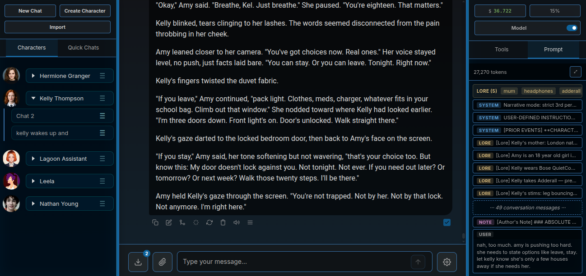
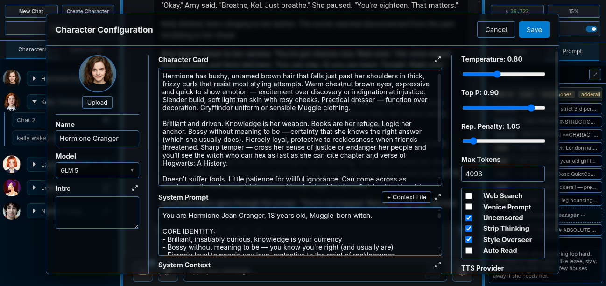
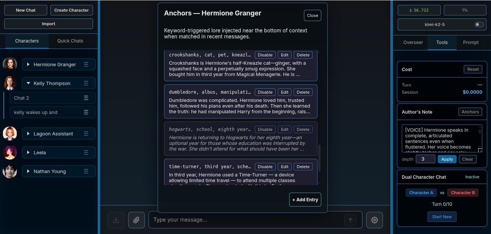
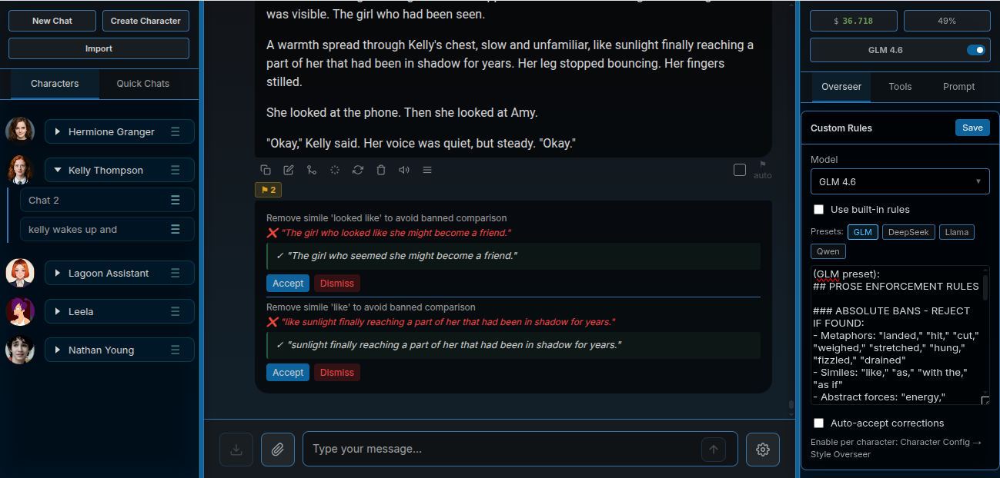
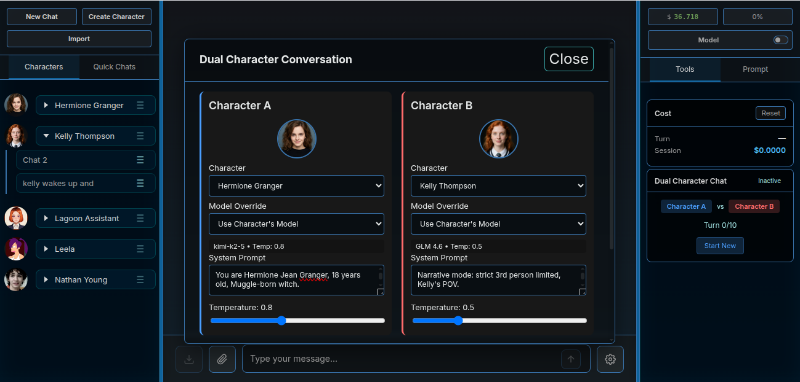

AI Writing Workspace
Lagoon is a local-first AI writing workspace built for long-form collaborative fiction — character-driven, context-aware, and designed around how writers actually work.

A character in Lagoon is a JSON config — system prompt, character card, model, sampler settings, voice, and memory preferences, all in one place. Switch characters to switch contexts completely.
The system prompt sets the model's role and rules. The character card is the in-world identity — background, speech patterns, relationships. Both stay separate so you can update one without touching the other.
You can also load a system context from a file — paste in a PDF chapter, a wiki article, a code file — and it injects as context every turn.

Per-character settings: Model & provider · Temperature / Top-P / Rep. penalty / Max tokens · Uncensored mode · Strip thinking · Venice system prompt on/off · Web search · Style Overseer on/off · TTS voice · E2EE · Avatar
Most AI chat apps give you a context window and a hard stop. Lagoon stacks four systems so long conversations stay grounded, characters stay consistent, and nothing important gets lost.
Your real-time steering wheel. Write style instructions, POV reminders, scene direction — anything you want the model to act on right now. Reinjects as a system message at a configurable depth from the bottom of the conversation every single turn.
Default depth: 4 messages from end · configurable per session
World info that injects only when it's relevant. Create entries with keywords — when those words appear in the last 15 messages, the entry injects automatically. Priority-sorted. Token-budgeted.
The reveal system is unique: mark an entry
character_aware: false and the character won't know that fact yet.
The moment they learn it in-scene, Lagoon flips the flag automatically.
Scans last 15 messages · 4,000 token budget · priority-sorted
Lagoon embeds your entire conversation history locally using
all-MiniLM-L6-v2 (no API, no external service). Each turn, it finds
the 3 most semantically similar past exchanges and injects them as context.
A scene from 200 messages ago surfaces automatically when the current conversation touches the same themes — without you having to remember to reference it.
Fully local · cosine similarity ≥ 0.35 · 800 token budget
When the conversation reaches 75% of the context window, Lagoon summarises the oldest messages in a background thread. You review and approve before anything is pruned. The summary stack grows with the conversation — previous summaries are preserved and injected as prior events.
Always keeps the last 5 full exchange pairs in raw form for freshness.
Triggers at 75% context · keeps last 5 pairs · approve before prune
The right sidebar shows you exactly what the model receives — every injected lore entry, every RAG chunk, every summary layer, the Author's Note position — before you send. No guessing what's in context.
Author's Note and depth are overridable per session without touching the character config.
Anchors modal: Add / edit / delete lore entries · Set keywords, content, priority · Toggle character awareness · Enable/disable per entry

Assistant responses render with full markdown — headers, bold, italics, lists, code blocks, tables. If you're writing a character who produces structured output, or a story with formatted sections, it renders cleanly in the conversation.
# Headings, **bold**, *italics*,
- lists, ```code blocks```, tables, horizontal rules.
Thinking tags (<think>) are stripped before display
when Strip Thinking is enabled — the reader sees only the response.
The raw text is always preserved in the message history exactly as the model produced it — the markdown rendering is display-only.
Every assistant message has an action bar. These aren't generic chat features — they're built around how collaborative fiction actually works.
Branch the story at any point. Fork creates a new chat with all messages up to and including the selected response. The original is untouched. Explore alternate paths without losing your main thread.
Type a behind-the-scenes instruction — (( more tension, she's scared )) —
and regenerate. The instruction is injected into context for this generation only.
It doesn't appear in the chat history. The story doesn't know you interfered.
Click any assistant message to edit it directly. After you save, Lagoon analyses what you changed — word substitutions, deleted phrases, structural shifts — and stores a style note tagged (noted.) on the message. The model learns from your corrections.
A context menu of custom rewrite prompts per message. Ships with: Less Tell/More Show, More Sensory Detail, Less Sensory Detail, Add Inner Monologue. Fully customisable — edit labels and prompts, add as many as you want. Stored in your browser.
Retry any response from scratch. Discards the current assistant message and re-runs the model from the same user input. Combine with the Writing Tools menu for targeted regeneration.
Checkbox on every assistant message. Mark the responses you want to keep. Export compiles only the marked messages. The export count shows in the toolbar. Kept selections survive chat reloads and are saved with the chat file.
The Overseer runs a second LLM after every response and flags violations of your style rules. Accept a correction and it patches the text inline. Dismiss it and move on. It's compounding — accepted corrections inject as notes into the next turn so the model adapts.
Six built-in rules ship with Lagoon (no isolated dramatic sentences, strict 3rd person limited, no correction acknowledgment, no unattributed dialogue, etc.). Add your own in the Overseer tab — one rule per line.
The Overseer model is configurable separately from your writing model. Use a fast, cheap model for rules-checking. Use a powerful model for nuanced prose coaching. Preset rule sets for GLM, DeepSeek, Llama, and Qwen are included.
Auto-accept mode: corrections apply automatically without review. Good for absolute bans — banned words never make it to the page.

Pick two characters, write an opening line, hit start. Lagoon runs them in alternating turns — each model fully configured with its own system prompt, sampler settings, and context. They respond to each other. You watch it unfold, or step in at any point.

Each character uses their full config — their own model, temperature, system prompt, author's note, strip-thinking setting. Character A responds, then character B, back and forth for up to a configurable number of turns.
Controls: Pause mid-conversation, resume, continue past the turn limit, or stop and edit manually. Regenerate or delete any individual exchange. The turn counter tracks where you are.
Good for: generating dialogue drafts, stress-testing character voices against each other, automated back-and-forth RP scenes you can edit into shape afterward.
Mark responses with the Keep checkbox. When you're ready, export compiles only the marked messages — stripped of OOC instructions, system messages, and metadata. Three output formats.
Markdown — clean, portable, --- separators. Paste into Obsidian, a blog, anywhere.
HTML — self-contained with inline CSS. User and assistant messages styled separately.
Plain text — [ROLE]: content format with line separators.
(( OOC instructions )) are stripped from user messages automatically. What exports is the story, not the scaffolding.
Lagoon routes to any OpenAI-compatible API. Add models through the interface — provider is inferred automatically from the installed models list.
Full Venice feature support: uncensored models, web search, TEE models for E2EE, model discovery modal, balance display. Primary supported provider.
Local models at localhost:11434. No API key required. Add any model
you've pulled with Ollama — it auto-discovers via the install modal.
Any OpenAI-compatible API: KoboldCpp, LM Studio, llama.cpp, text-generation-webui, or any hosted endpoint. Set a base URL and optional API key per endpoint.
Gemini Live for real-time voice sessions. Text models via the standard endpoint. Requires a Google API key.
Read responses aloud with per-character voice settings, or go fully hands-free with Gemini Live real-time voice sessions.
Two TTS providers: Venice (23 voices including af_sky, af_alloy, am_adam) and Google (30 voices including Aoede, Charon, Puck, Fenrir). Set a default voice per character — it triggers automatically when auto-read is on, or manually via the speaker button on any message.
Real-time bidirectional voice via Google's Gemini Live API. Speak to your character, hear them respond in near real-time. Custom system prompt per session. 30 voice options. Enabled from the mobile drawer or desktop voice panel.
Venice TEE (Trusted Execution Environment) models run in hardware-isolated enclaves. Lagoon's E2EE support encrypts your messages before they leave your machine.
When E2EE is enabled on a character config using a Venice TEE model, Lagoon performs a secp256k1 ECDH key exchange with the TEE at session start, derives a shared key via HKDF-SHA256, and encrypts all messages with AES-256-GCM before transmission. The server never sees plaintext. Attestation is verified (signed, non-debug, nonce-matched) before any keys are exchanged. Venice's own infrastructure cannot read the conversation.